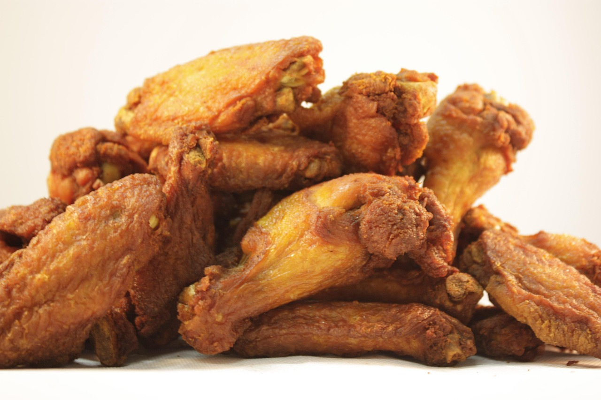

Fried Chicken

Image by brandonmiront
from Pixabay
Description
Fried chicken is crispy on the outside and juicy on the inside, marinated in rich spices like
curry, thyme, and ginger before being deep-fried to perfection.
It's often served alongside jollof rice,
spaghetti, or fried plantain, making it a favorite for parties and Sunday lunches.
Ingredients
- 1 kg chicken pieces (drumsticks, wings, or thighs)
- 1 medium onion (chopped)
- 2 cloves garlic (minced)
- 1 tablespoon grated ginger
- 2 teaspoons curry powder
- 1 teaspoon thyme
- 2 seasoning cubes (Maggi or Knorr)
- 1 teaspoon salt
- 1 teaspoon black pepper
- ½ teaspoon paprika or cayenne pepper (optional for heat)
- 1 cup all-purpose flour (for coating)
- Vegetable oil (for deep frying)
Steps
-
Marinate the chicken:
In a bowl, combine chicken pieces with onions, garlic, ginger, curry, thyme, salt, black pepper, seasoning
cubes, and lemon juice.
Mix thoroughly, cover, and let it marinate for at least 1 hour (or overnight for deeper flavor).
- Parboil the chicken:
Transfer the marinated chicken into a pot. Add about half a cup of water and steam on medium heat for 10–15
minutes until the chicken is tender and juices release.
- Prepare for frying:
Remove the chicken and let it cool slightly.
Roll each piece in all-purpose flour to coat evenly. Shake off excess flour.
- Heat the oil:
Pour vegetable oil into a deep frying pan or pot. Heat until moderately hot (about 170–180°C).
- Fry the chicken:
Fry the pieces in batches — avoid overcrowding the pan.
Turn occasionally until each side is golden brown and crisp (about 8–10 minutes per batch).
- Drain and rest:
Remove the fried chicken and place it on paper towels to absorb excess oil.
- Serve hot:
Perfect with jollof rice, spaghetti, fried rice, or coleslaw.
Home Page